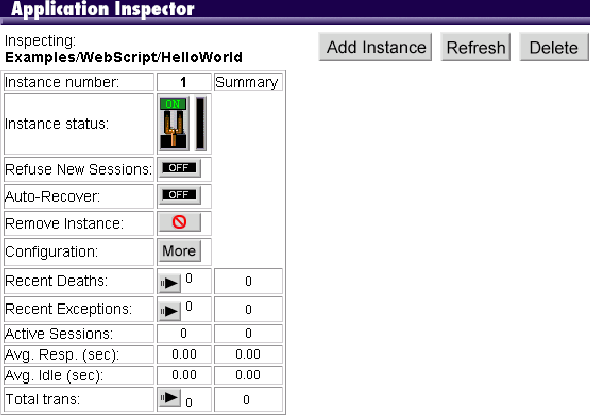

Serving WebObjects
 Table of Contents
Table of Contents  Previous Section
Previous Section
Using the Monitor to Obtain Application Information
The Monitor application can provide you with information about all of your running WebObjects applications.

- The left side of the screen shows you how many WebObjects applications you have on the system and which ones currently have at least one instance running. If an instance is running, the application name is a hyperlink.
- Click the inspector button, and the Application Inspector appears in the right frame. It shows you how many instances you've configured for that application (that is, if you're set up to do load balancing), which instances are running, whether the instance has encountered an exception, and if the instance has recently died.
- Click the More button to see detailed information about an application instance in the bottom part of the right frame. This page shows you the arguments used to start the application: the executable name, host name, document root, port number, and instance number. It also shows you if periodic application shutdown is enabled or disabled and, if enabled, under what circumstances the application will shut down. (For more information, see "Periodically Shutting Down the Application" in this guide.)
- In the Application Inspector, you can click the arrow button in the Transactions field to obtain information about the number of transactions received, the response times for each transaction, and the average response time.
- In the Application Inspector, if the number in the Recent Deaths field is greater than 0, you can click the arrow button in the field to obtain more information about when the application died and how many times the application died.
- In the Application Inspector, if the number in the Recent Exceptions field is greater than 0, you can click the arrow button in that field to obtain information about the exception. This screen shows you which exception occurred and attempts to describe which part of the application was executing at the time of the exception.
Table of Contents  Next Section
Next Section